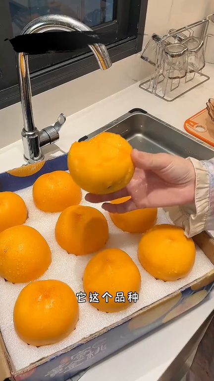
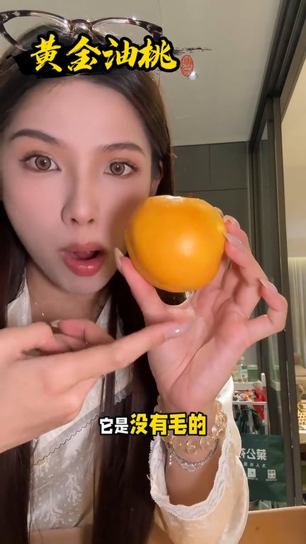
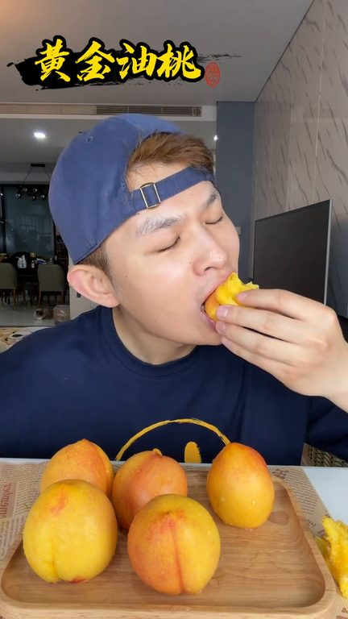
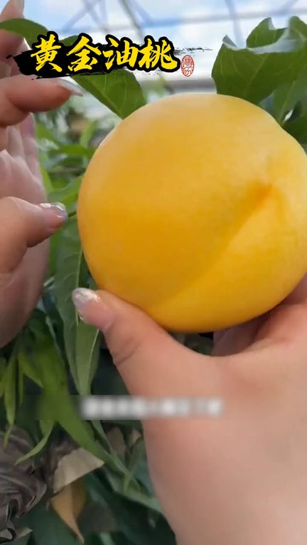

TOP 1 · 代表素材深度拆解
核心放量 点击承压
视频为原始素材 HTTPS 链接；点击后加载，建议在网络环境良好时播放。
16.7万素材消耗
2.93%CTR
22.0%类目消耗占比
-0.53pp较类目均值
表现判断
该素材是类目内第 1 名，属于“核心放量”；CTR 低于类目均值。消耗体现承接规模，CTR 体现首屏与定向效率，两项应结合判断，不能仅以单指标下结论。
表达标签
口播三段式证据
开场钩子怎么会有人这么喜欢吃这种芒果黄金蜜桃这个月底三香了天天吃它真的每个春天吃都会被激进的那种它这个品种不仅桃子味更浓还多一股芒果香果肉也像芒果一样的又嫩又滑的
中段论证又有芒果那种热带水果的香气好绝这一口真的好好吃像这种桃子它是没有毛的外皮很光滑就直接冲洗一下就能吃了真的我感觉以前吃的这种桃子实在是不值一提但是它这个一年就吃这么一戒你要是赶不上的话就只能等明年都是给你渲染腺发每个大上每个个头都很均匀这个蜜桃它不能打烊也不敢脆手不然就不是这个味儿了趁它这个蜜桃现在是当季而且还有活动价格非常非常的划算你要是等到它下季了不好意思…
结尾转化每一个都是色泽金黄肉后和小的一口下去脆甜多汁软糯香甜家里人都爱吃这要是错果那真的是太可惜了金选树上自然成熟不打药不催熟过农新鲜采摘精挑细选发货的无论你是送人还是自己吃都很合适趁现在果园直銷都是现摘现发没吃过的家人们带上一单回去尝尝吧
有效点
- 消耗占比 22.0% 说明具备投放承接能力，但 CTR 较类目均值低 0.53pp
- 口播包含明确到手机制或直播间指令，转化路径较完整
迭代动作
- 重做前 3–5 秒：结果前置、缩短背景铺垫，并把核心人群直接写进首屏字幕
- 视频时长偏长，建议剪出 30–45 秒短版，仅保留钩子、两项证据和一次 CTA
- 复核功效、绝对化及价格稀缺措辞；增加适用边界和效果因人而异提示
合规关注

钩子建立 · 9.8s

场景/问题展开 · 74.2s

卖点证据 · 170.7s

转化收口 · 235.1s
查看完整口播摘要
怎么会有人这么喜欢吃这种芒果黄金蜜桃这个月底三香了天天吃它真的每个春天吃都会被激进的那种它这个品种不仅桃子味更浓还多一股芒果香果肉也像芒果一样的又嫩又滑的一点鲜味都没有这个是我最好吃的桃子了完全我买过它们家很多次的就每次烧到品质都很好还是单单那边桃子茶就满口感就是会更嫩更甜一些这边一会真的很难买到这种品质的芒果桃它这个硬着吃就是脆甜的放软了还能爆汁不愧是桃子里的贵族它这个品种就是可以超过两种不同的口感根据外面买真的很贵了你看我买这一箱四斤半的大果才多少钱都是不打药不脆熟的特别新鲜你没有吃过这种一样是最好吃的这种这这两个月你要是能吃到这个桃子真的恭喜你因为它现在这个口感就是它非常非常哇塞的时候但老实说其实我也是头一回吃到这种芒果黄金蜜桃就我一开始我真的觉得加上芒果这两个字它就是商家的噱头但是当我吃了第一口我真的被它惊艳住了咱也不知道是桃子出了鬼还是芒果劈了腿既有水蜜桃的香甜又有芒果那种热带水果的香气好绝这一口真的好好吃像这种桃子它是没有毛的外皮很光滑就直接冲洗一下就能吃了真的我感觉以前吃的这种桃子实在是不值一提但是它这个一年就吃这么一戒你要是赶不上的话就只能等明年都是给你渲染腺发每个大上每个个头都很均匀这个蜜桃它不能打烊也不敢脆手不然就不是这个味儿了趁它这个蜜桃现在是当季而且还有活动价格非常非常的划算你要是等到它下季了不好意思真的后悔的来不及来个朋友们我是你们的黄桃哥加油桃哥这个桃你收到货直接吃就是又脆又甜的我前两天卖了那个桃就是你收到货虽然是脆的但是甜度还不够得放软了它甜度才会上去这个直接吃就是很甜的但这个放软也放得很快两天三天就发软了很多按照山东的桃水分是真足我看有没有那个稍微比较脆一点的口感嘎嘎一点的好像都有点发软了因为这放了第三天之时今年我估计会卖桃卖的比较多各种种类的桃我比较爱吃尤其是跟性相比我性的话吃不吃都行不是那么喜欢但桃的话也可喜欢吃了什么各种蜜桃啊水蜜桃啊毛桃啊黄桃油桃都爱吃你看可漂亮了这桃哇这个比前两个都甜因为这个最软也是越放软甜都会上去喝完了一会就是这个味啊去年一年都没吃过饮这十个一年啊总算给它等来了大家直接毕举言买就可以了好吗马上去抢它想都不要想赶紧买为什么呢因为这个我们今天呢是补贴给大家这个是良心推荐买了之后你就知道这个有多好昨天有粉丝留言说真后悔后悔买少了现在全家人都抢了吃正好今天搞活动万万没有想到桃子中还有这么好吃的品种它就是当季新鲜水果黄金油桃每一个都是色泽金黄肉后和小的一口下去脆甜多汁软糯香甜家里人都爱吃这要是错果那真的是太可惜了金选树上自然成熟不打药不催熟过农新鲜采摘精挑细选发货的无论你是送人还是自己吃都很合适趁现在果园直銷都是现摘现发没吃过的家人们带上一单回去尝尝吧